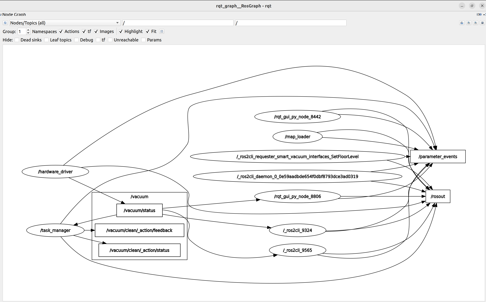
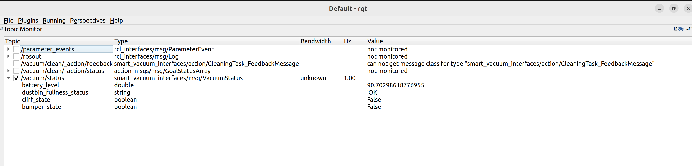
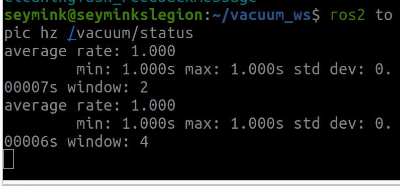
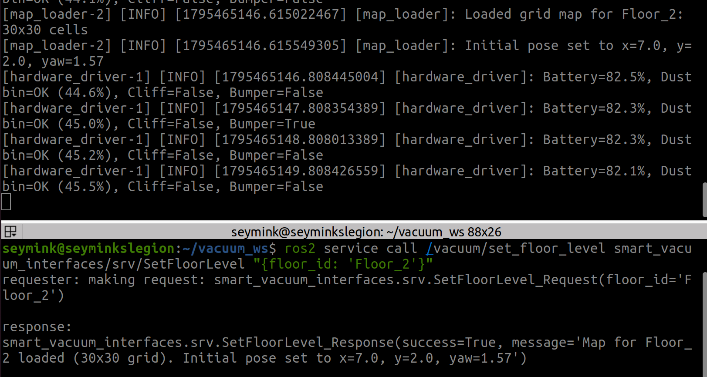
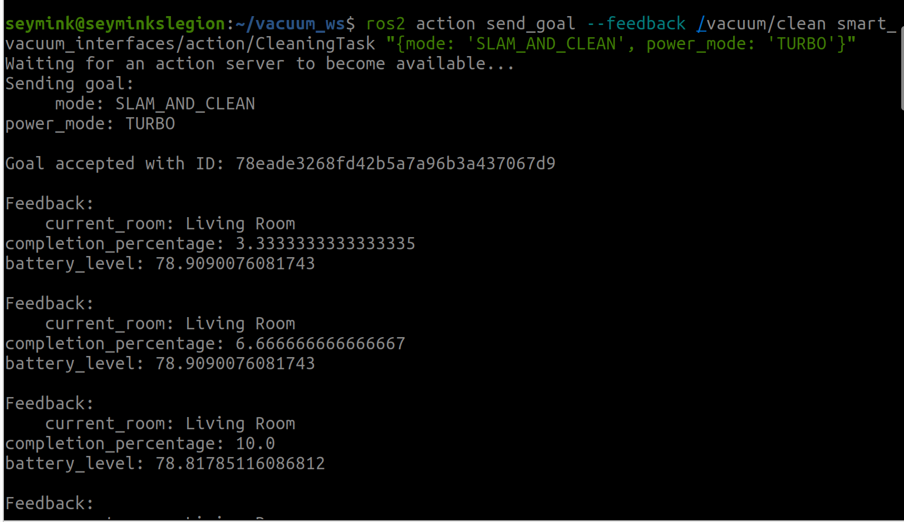

ROS 301E – Programming Techniques for Robotics
Assist. Prof. Dr. Abdurrahman Yilmaz
Student: NAME SURNAME Student ID: 000000000
GitHub repository: https://github.com/seymaaozr/ROS301E_HW1
Platform: Ubuntu 22.04, ROS 2 Humble, Python (rclpy)
This homework implements a simulated ROS 2 software architecture for an autonomous home vacuum cleaner. The system consists of two packages and three nodes, and uses all three core ROS 2 communication patterns: a topic for 1 Hz telemetry, a service for floor-level configuration, and an action for long-running cleaning sessions with feedback and cancellation.
| Pattern | Name | Interface type | Server / Publisher |
|---|---|---|---|
| Topic (1 Hz) | /vacuum/status | smart_vacuum_interfaces/msg/VacuumStatus | hardware_driver |
| Service | /vacuum/set_floor_level | smart_vacuum_interfaces/srv/SetFloorLevel | map_loader |
| Action | /vacuum/clean | smart_vacuum_interfaces/action/CleaningTask | task_manager |
/vacuum/status every second./vacuum/set_floor_level service. It loads the grid map of the requested floor into memory and sets the initial pose parameters./vacuum/clean action. It runs a multi-step cleaning session, streams feedback, returns session statistics and supports cancellation ("Return to Dock"). It also subscribes to /vacuum/status to report the live battery level and to abort the session if the battery is depleted.The workspace contains two packages. Interfaces are kept in a separate ament_cmake package
(interface generation requires CMake), while the nodes are written in Python in an ament_python package.
vacuum_ws/src/
├── smart_vacuum_interfaces/ # ament_cmake – custom interfaces
│ ├── msg/VacuumStatus.msg
│ ├── srv/SetFloorLevel.srv
│ ├── action/CleaningTask.action
│ ├── CMakeLists.txt
│ └── package.xml
└── smart_vacuum/ # ament_python – nodes (rclpy)
├── smart_vacuum/hardware_driver.py
├── smart_vacuum/map_loader.py
├── smart_vacuum/task_manager.py
├── launch/vacuum.launch.py
├── package.xml
└── setup.py
Interface package – CMakeLists.txt generates the code for all three interface files; package.xml declares
rosidl_default_generators (build), rosidl_default_runtime (exec), action_msgs, and membership of rosidl_interface_packages.
find_package(ament_cmake REQUIRED)
find_package(rosidl_default_generators REQUIRED)
find_package(action_msgs REQUIRED)
rosidl_generate_interfaces(${PROJECT_NAME}
"msg/VacuumStatus.msg"
"srv/SetFloorLevel.srv"
"action/CleaningTask.action"
DEPENDENCIES action_msgs
)
Node package – package.xml declares the dependencies and setup.py registers the three executables and installs the launch file.
<depend>rclpy</depend> <depend>std_msgs</depend> <depend>action_msgs</depend> <depend>smart_vacuum_interfaces</depend> <exec_depend>launch</exec_depend> <exec_depend>launch_ros</exec_depend>
entry_points={
'console_scripts': ['hardware_driver = smart_vacuum.hardware_driver:main',
'map_loader = smart_vacuum.map_loader:main',
'task_manager = smart_vacuum.task_manager:main'],
},
float64 battery_level # battery charge (%) string dustbin_fullness_status # "OK" or "FULL" bool cliff_state # cliff sensor triggered bool bumper_state # bumper sensor triggered
string floor_id # e.g. "Floor_1", "Floor_2", "Floor_3" --- bool success string message # informative status message
# Goal string mode # MAP_ONLY | CLEAN_EXISTING_MAP | SLAM_AND_CLEAN string power_mode # ECO | STANDARD | TURBO --- # Result int64 SUCCESS=0 int64 CANCELLED=1 int64 FAILED=2 float64 cleaned_area # m^2 float64 total_elapsed_time # seconds int64 completion_code --- # Feedback string current_room float64 completion_percentage float64 battery_level
The completion codes are defined as constants inside the result so that both server and clients use the same values.
A 1.0 s timer calls publish_status(), which updates the simulated battery (slow drain with a simulated
recharge on the dock below 5 %) and dustbin level (reported as FULL above 80 %), randomly triggers the cliff and
bumper sensors, and publishes a VacuumStatus message.
self.publisher = self.create_publisher(VacuumStatus, '/vacuum/status', 10)
self.timer = self.create_timer(1.0, self.publish_status)
def publish_status(self):
self.battery = max(0.0, self.battery - random.uniform(0.05, 0.2))
if self.battery < LOW_BATTERY_THRESHOLD:
self.get_logger().warn('Battery low: simulating recharge on dock')
self.battery = 100.0
self.dustbin = min(100.0, self.dustbin + random.uniform(0.1, 0.5))
msg = VacuumStatus()
msg.battery_level = self.battery
msg.dustbin_fullness_status = (
'FULL' if self.dustbin >= DUSTBIN_FULL_THRESHOLD else 'OK')
msg.cliff_state = random.random() < 0.05
msg.bumper_state = random.random() < 0.05
self.publisher.publish(msg)
Each floor is described by its grid size and initial pose. The service callback validates the floor ID, allocates the
occupancy grid in memory, updates the initial_pose_x/y/yaw and current_floor parameters with
set_parameters(), and returns success with an informative message. An unknown floor ID returns
success=False and lists the valid options.
FLOORS = { # floor_id -> (width, height, x, y, yaw)
'Floor_1': (20, 20, 0.0, 0.0, 1.57),
'Floor_2': (30, 30, 7.0, 2.0, 1.57),
'Floor_3': (40, 40, 2.0, 4.0, 1.57),
}
def set_floor_level_callback(self, request, response):
floor_id = request.floor_id
if floor_id not in FLOORS:
response.success = False
response.message = (
f'Invalid floor "{floor_id}". Valid options: {", ".join(FLOORS)}')
return response
width, height, x, y, yaw = FLOORS[floor_id]
self.grid_map = [[0] * width for _ in range(height)] # load grid map
self.set_parameters([ # set initial pose
Parameter('current_floor', value=floor_id),
Parameter('initial_pose_x', value=x),
Parameter('initial_pose_y', value=y),
Parameter('initial_pose_yaw', value=yaw),
])
response.success = True
response.message = (f'Map for {floor_id} loaded ({width}x{height} grid). '
f'Initial pose set to x={x}, y={y}, yaw={yaw}')
return response
The action server uses a ReentrantCallbackGroup with a MultiThreadedExecutor, so that cancel
requests and /vacuum/status messages are processed while the long-running execute callback is active.
The goal callback rejects unknown modes or power modes. The cancel callback accepts every cancel request ("Return to Dock").
self.action_server = ActionServer(
self, CleaningTask, '/vacuum/clean',
execute_callback=self.execute_callback,
goal_callback=self.goal_callback,
cancel_callback=self.cancel_callback,
callback_group=self.callback_group)
def goal_callback(self, goal_request):
if goal_request.mode not in MODE_DURATION:
return GoalResponse.REJECT
if goal_request.power_mode not in POWER_SPEED:
return GoalResponse.REJECT
return GoalResponse.ACCEPT
def cancel_callback(self, goal_handle):
self.get_logger().info('Received cancel request (Return to Dock)')
return CancelResponse.ACCEPT
The execute callback divides the session into 0.5 s steps. The duration depends on the mode (MAP_ONLY 5 s, CLEAN_EXISTING_MAP 10 s, SLAM_AND_CLEAN 15 s) and the cleaning rate depends on the power mode (ECO 0.5, STANDARD 1.0, TURBO 1.5 m²/s; MAP_ONLY does not clean). In every step it first checks for a cancel request or depleted battery, then publishes feedback with the current room, completion percentage and battery level. At the end it returns the cleaned area, elapsed time and completion code.
for i in range(steps):
if goal_handle.is_cancel_requested:
goal_handle.canceled()
self.get_logger().info('Task canceled, returning to dock')
return self.make_result(cleaned_area, start_time,
CleaningTask.Result.CANCELLED)
if self.battery_level <= 0.0:
goal_handle.abort()
return self.make_result(cleaned_area, start_time,
CleaningTask.Result.FAILED)
time.sleep(STEP_PERIOD)
if cleans:
cleaned_area += speed * STEP_PERIOD
feedback.current_room = ROOMS[i * len(ROOMS) // steps]
feedback.completion_percentage = (i + 1) / steps * 100.0
feedback.battery_level = self.battery_level
goal_handle.publish_feedback(feedback)
goal_handle.succeed()
return self.make_result(cleaned_area, start_time, CleaningTask.Result.SUCCESS)
vacuum.launch.py starts all three nodes together:
ros2 launch smart_vacuum vacuum.launch.py.
All steps were run after colcon build and source install/setup.bash, with the full system
started by the launch file.

The graph shows the three nodes /hardware_driver, /map_loader and /task_manager.
/hardware_driver publishes /vacuum/status, which is subscribed by /task_manager
(and by the rqt / ros2 CLI monitoring nodes). /task_manager publishes the action topics
/vacuum/clean/_action/feedback and /vacuum/clean/_action/status, which confirms that the
/vacuum/clean action server is running. All application interfaces are grouped under the /vacuum
namespace, as required. Note that rqt_graph in ROS 2 only draws topics, so the /vacuum/set_floor_level
service does not appear as an edge; the service is verified in V3. The /_ros2cli_* and
/rqt_gui_py_node_* nodes belong to the command-line and rqt tools used during the demonstration.

/vacuum/status messages at 1.00 Hz.The Topic Monitor plugin of rqt shows the /vacuum/status topic of type
smart_vacuum_interfaces/msg/VacuumStatus with all four fields: battery_level,
dustbin_fullness_status ('OK'), cliff_state and bumper_state. The values update live
and the measured publishing rate is 1.00 Hz.

ros2 topic hz /vacuum/status confirms an average rate of 1.000 Hz.ros2 service call /vacuum/set_floor_level smart_vacuum_interfaces/srv/SetFloorLevel "{floor_id: 'Floor_2'}"

The service returns success=True with the message
"Map for Floor_2 loaded (30x30 grid). Initial pose set to x=7.0, y=2.0, yaw=1.57".
The launch terminal shows the corresponding map_loader logs, "Loaded grid map for Floor_2: 30x30 cells"
and "Initial pose set to x=7.0, y=2.0, yaw=1.57", which confirms that the map was loaded and the initial pose
parameters were set. Meanwhile, the hardware_driver keeps publishing telemetry every second.
ros2 action send_goal --feedback /vacuum/clean smart_vacuum_interfaces/action/CleaningTask \
"{mode: 'SLAM_AND_CLEAN', power_mode: 'TURBO'}"

The goal is accepted by the task manager and intermediate feedback is received every 0.5 s, containing the
current room (Living Room), the completion percentage (3.3 %, 6.7 %, 10.0 %, …) and the live battery level
taken from /vacuum/status.
While feedback is streaming, pressing Ctrl+C in the send_goal terminal sends a cancel request
("Canceling goal..."). The task manager logs "Received cancel request (Return to Dock)" and
"Task canceled, returning to dock", stops the session at the next step and returns the partial statistics
(cleaned_area, total_elapsed_time) with completion_code: 1 (CANCELLED).
The client reports "Goal finished with status: CANCELED", which demonstrates graceful abort behavior. The system
keeps running and accepts new goals afterwards.
A complete ROS 2 architecture for an autonomous home vacuum cleaner was designed and implemented with custom message, service and action interfaces. The verification steps show that telemetry is published at 1 Hz, the floor configuration service loads the selected map and sets the initial pose, and the cleaning action provides live feedback, returns session statistics and can be cancelled gracefully. The full source code and build/run instructions are available at https://github.com/seymaaozr/ROS301E_HW1.